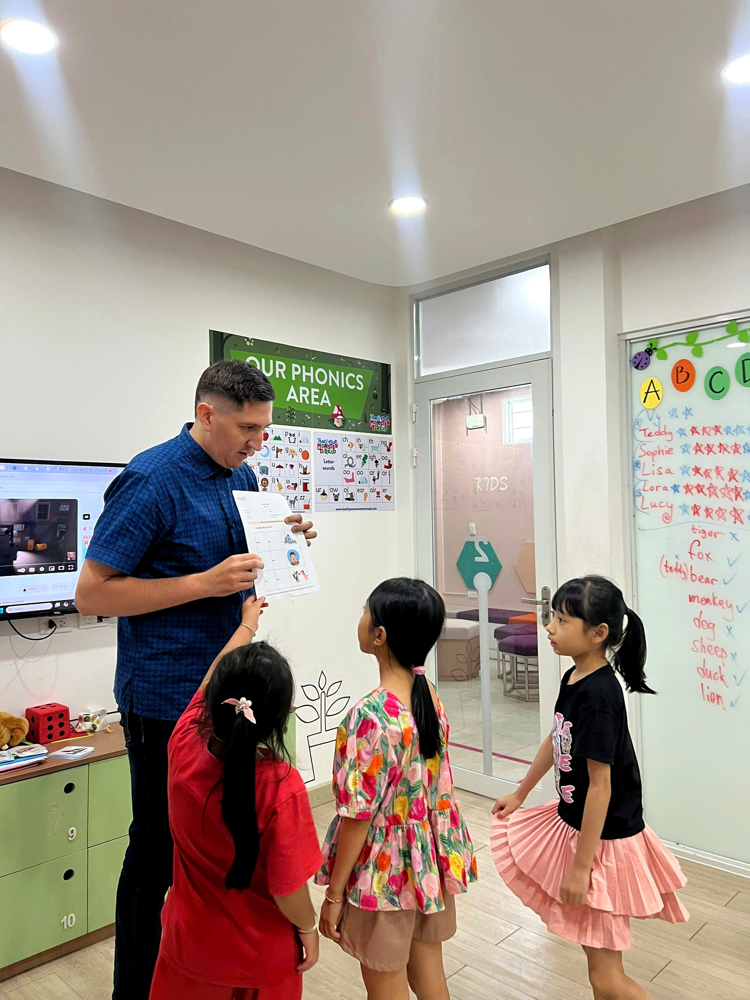

Vì sao Beyond ra đời
Beyond English ra đời từ một trăn trở rất thật: ở Bà Rịa, không thiếu trung tâm tiếng Anh, nhưng để tìm một nơi thực sự cởi mở, an toàn, và biết cách khuyến khích trẻ phát triển — lại không hề dễ. Beyond được tạo ra như một lựa chọn khác cho điều đó. Với chúng mình, học tiếng Anh không chỉ là học từ vựng hay ngữ pháp. Đó là hành trình để trẻ hiểu bản thân hơn, tò mò hơn về thế giới xung quanh, và tự tin nói lên suy nghĩ của mình.
Vì vậy, ngay từ ngày đầu, Beyond chọn đi theo Inquiry-based learning và Project-based learning. Thay vì ngồi nghe và ghi nhớ, các con được khuyến khích tự đặt câu hỏi, tự khám phá, và cùng nhau giải quyết những dự án thực tế. Chính trong quá trình đó, tư duy phản biện, kỹ năng giao tiếp và tinh thần làm việc nhóm dần được hình thành — một cách tự nhiên, không gượng ép. Mỗi hoạt động ngoại khóa, mỗi dự án nhóm, hay chương trình đọc sách "Cool Kids Read Books" đều hướng đến một điều: giúp các con yêu việc học, không chỉ trong một học kỳ, mà lâu dài.
Beyond không đơn thuần là một trung tâm tiếng Anh. Đó là một cộng đồng nhỏ, nơi mỗi đứa trẻ được nhìn thấy, được đồng hành, và được lớn lên tự tin, hạnh phúc — theo cách của riêng mình.
